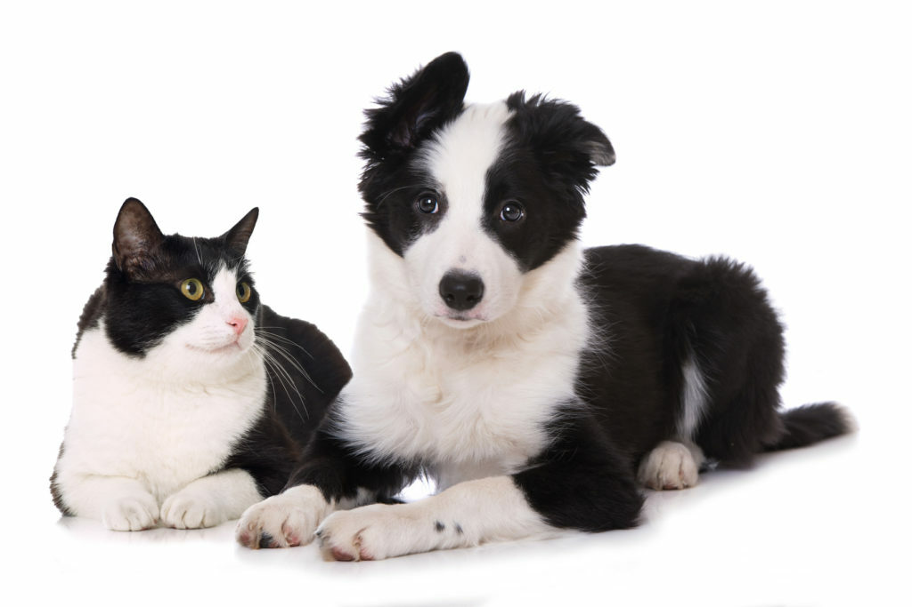
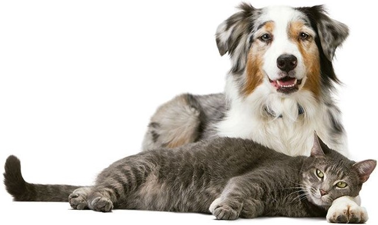
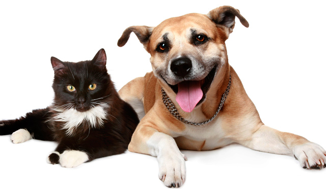
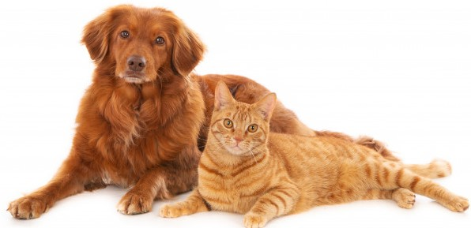

NUESTRO COMPROMISO ES CON LAS MASCOTAS
El equipo médico todos los días se prepara para brindar
el mejor servicio a las mascotas que lo necesiten. Es fundamental
en nuestra filosofía encontrar una respuesta a todos
los cuidadores de mascotas que nos consultan por el bienestar,
salud, higiene y nutrición.

MISIÓN
Desde 2018 se busca apoyar, fortalecer y construir una relación de respeto mutuo en el vínculo afectivo humano-animal, ofreciendo en un mismo lugar todo lo que necesitas para tu peludito y servicios integrales especializados, contamos con un gran equipo de trabajo ético y altamente calificado para suplir las necesidades de tu amigo fiel.
Siempre basados en nuestros valores corporativos con vocación al servicio, y en nuestra filosofía de brindar salud y bienestar que le permita a tu mascota disfrutar de una excelente calidad de vida.

VISIÓN
En el futuro nos proyectamos a seguir siendo la Clínica Veterinaria
preferida por ustedes, nuestros clientes, evolucionando día a día con los mejores
equipos, materiales y productos que sigan garantizando la salud y el bienestar de
nuestros pacientes.

POLITICA DE CALIDAD
Estamos comprometidos con la salud y el bienestar de las mascotas, lo cual se ve reflejado a través del desarrollo e implementación de procesos que se realizan conforme a los protocolos establecidos por todos los entes reguladores, siempre con la mayor transparencia y respeto hacia las mascotas y sus familias, buscando ofrecer altos estándares de calidad y satisfacción total.